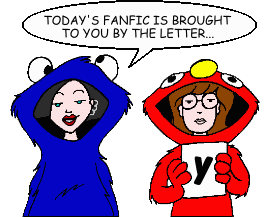
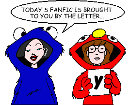

Fan Fiction
"Y" by Author

Fan Fiction
"Y" by Author

|
Authors: If you no longer wish for any of your stories to be posted, please send e-mail to fanfic@lawndale.net and I will remove them at once. |
| Yui Daoren (yui_daoren@hotmail.com) |
| Ambushed! Category: Miscellaneous Daria! Jane! Aerial combat! Chaos! Destruction! Jane dies! Ho-hum, just another day... |
| Consequences of a Parade Category: Miscellaneous Daria has a hard decision to make when Jane discovers her feelings for Tom. |
| Doctor Who Gives a Damn Category: Crossovers & Parodies A strange man and woman appear in Lawndale, taking Daria and Jane on a galaxy-spanning, deadly adventure! Based on the venerable BBC television series "Doctor Who." |
| The Emancipation of Stacy Rowe Category: Miscellaneous Stacy's life is turned on its ear when a handsome new member of the Lawndale Lions makes her the center of his attention. |
| Identity Crisis [Artwork] Category: Sci-Fi, Fantasy & Horror During a European vacation, Daria meets a strange woman who calls herself a sorceress. When Daria's appearance begins to change after being enchanted, will she still be the same Misery Chick we all know and love? |
| Life's Meandering Category: Miscellaneous Life's good - then it takes some bad turns for Daria, with positive consequences. |
| Not Your Average Jane Category: Miscellaneous Jane tries to put her life back together after a few blows to her confidence in her identity. Takes place after "Is It Fall Yet?" but before "Fizz Ed." |
| Out On Vacation Category: Miscellaneous Daria and Jane admit to something while on vacation, and it tears Daria's family apart. |
| Shipping Charges Apply Category: Miscellaneous Helen and Jake's marriage is crumbling, and Quinn can't take it! What's a 17-year-old cynic to do? Take up a martial art? |
| Smoke and Ashes Category: Miscellaneous Daria, Jane and Quinn survive a school shooting. Their losses take a greater toll, and Daria wonders if she did enough. |